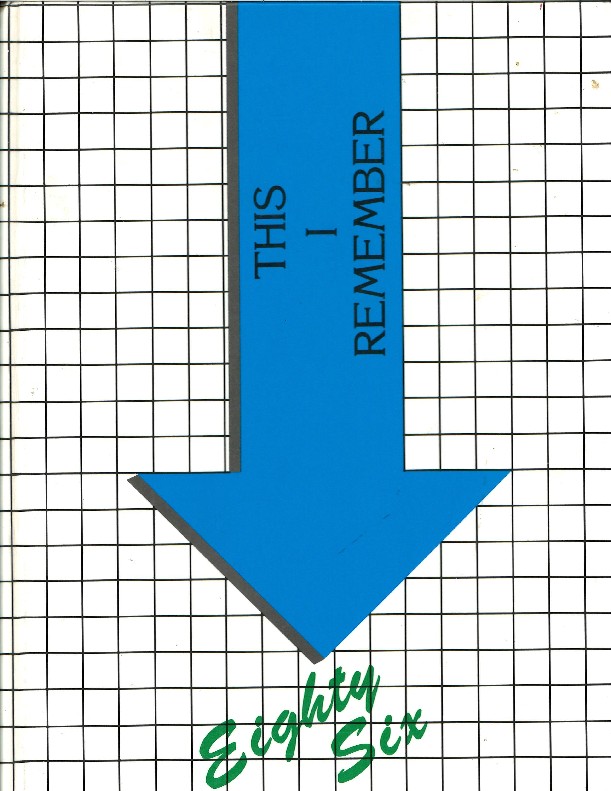

Class of '86
The unofficial hangout for the Smithville Smithies who graduated together in 1986. Same crest, same green and white — just for us.
The Anvil Alumni Gateway
One passcode opens the roster, reunion photos, and memorial. It's a courtesy lock for classmates — share the code with the Class of '86, not the internet.
Classmate passcode
You're already in. Head to the Members Hub whenever you're ready.
Don't have the passcode? Ask a classmate who was at the 40th, or use the committee email in the footer once it's been added.

The classmate roster
Senior portraits from the 1986 yearbook, plus the classmates listed as not pictured. Unlock the gateway, then browse, search, and send in a life update.
Profiles are a yearbook snapshot until you write in. Updates go to the committee (Google Form or email) so they show up for everyone — not just on your own computer.
View the roster Update my pageThe Class of '86 mixtape
A living playlist. It starts with the year's biggest hits — add your own any time.
- "Take My Breath Away" — Berlin
- "That's What Friends Are For" — Dionne Warwick & Friends
- "Papa Don't Preach" — Madonna
- "Higher Love" — Steve Winwood
- "Word Up!" — Cameo
- "Broken Wings" — Mr. Mister
- "The Way It Is" — Bruce Hornsby & the Range
- "Walk Like an Egyptian" — The Bangles
Listen & add your own
The class mixtape playlist will appear here once the committee adds it. Until then, the Side A track list is the tape.
The 40th was a gift. When the committee picks a date for the next one, it will show up here.
Tell us you'll comeThings we miss
The stuff that made 1986 feel like 1986 — Smithville edition.
Trapper Keepers
The Velcro rip heard across every homeroom in America.
Members Only jackets
Snap collar up, hands in pockets, instant main-character energy.
MTV, actually playing videos
Waiting an hour for your favorite one to come back around.
Mixtape swapping
Forty-five minutes of careful button-mashing on a dual cassette deck.
Cruising in Town
Waiting an hour in various sections of the crawling party in the streets to get back to the beginning of the loop.
The kitchen landline
Cord stretched down the hall for privacy that never actually came.
Top Gun at the theater
Half the class walked out wanting aviators and a callsign.
Senior year in green and white
The last lap around Smithville before the forge sent us out into the world.